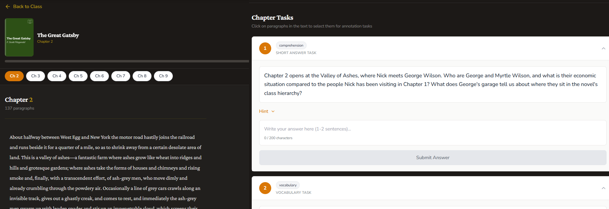

BookPulse is an interactive reading companion for ELA classrooms. Every chapter, every student, every edition. Teachers pick a text from the catalog, students join with a 6-character code, and the dashboard tracks comprehension in real time. 20 classroom-ready texts. 14 task types per chapter. AI feedback as an upgrade, never a requirement.

Class novel studies are still run on photocopied packets. Print 150, hand them out, lose half by Friday, grade the survivors over a weekend, repeat. The teacher has no idea who actually read until the answers come back. The student has no idea where the rest of the class is.
BookPulse replaces the packet with an interactive, chapter-by-chapter reading companion. Twenty classroom-ready texts in the catalog: 1984, Fahrenheit 451, Frankenstein, Holes, Of Mice and Men, Romeo and Juliet, The Giver, The Hobbit, To Kill a Mockingbird, Wonder, and more. Each chapter mixes 14 task types so engagement holds across an entire novel.
Pricing: free preview of every text (first 3-4 chapters). $9/mo or $69/yr for Basic. $14.99/mo or $149/yr for Plus.
Reading a whole novel as a class is one of the things that's gotten harder, not easier, in the last decade. BookPulse makes the joint march through a book feel inevitable instead of impossible. The teacher sees the whole room at once. The student gets a task that asks them to actually read the page in front of them. The product owes its design to a decade of standing at the front of an ELA classroom.